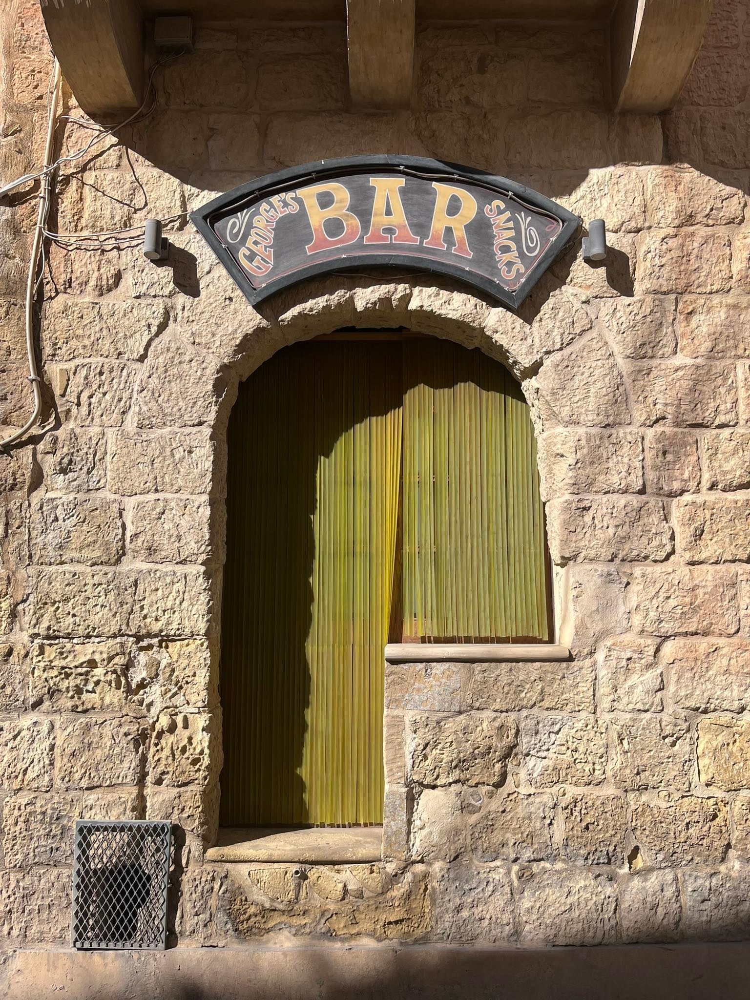
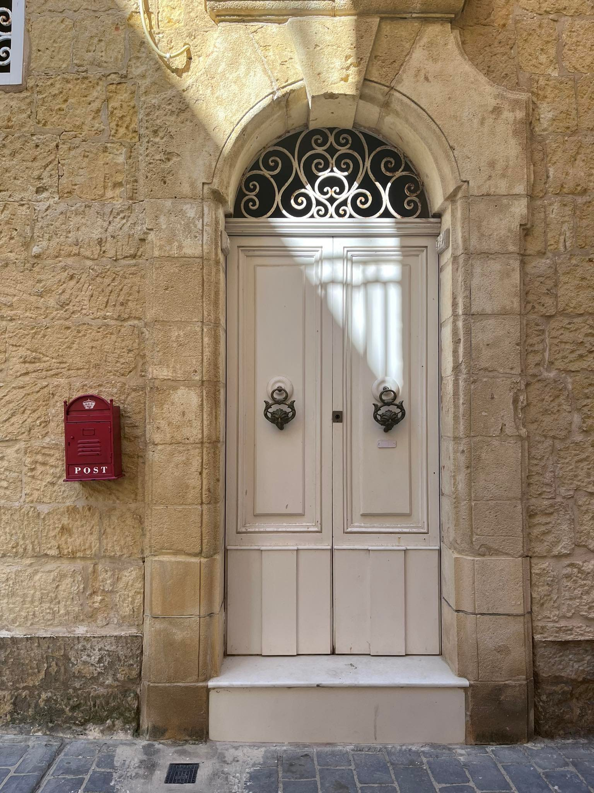
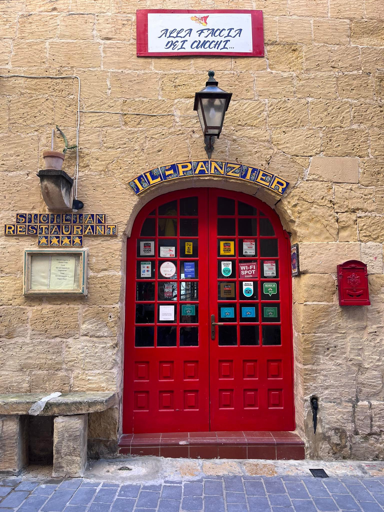
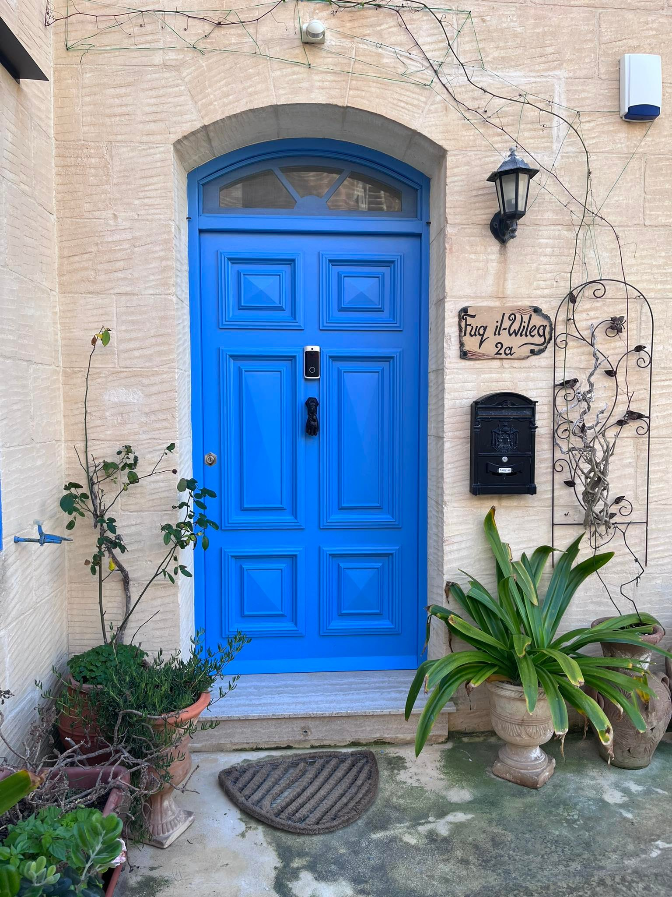
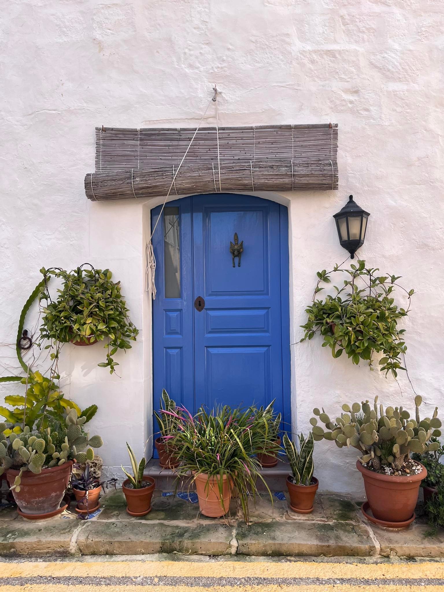
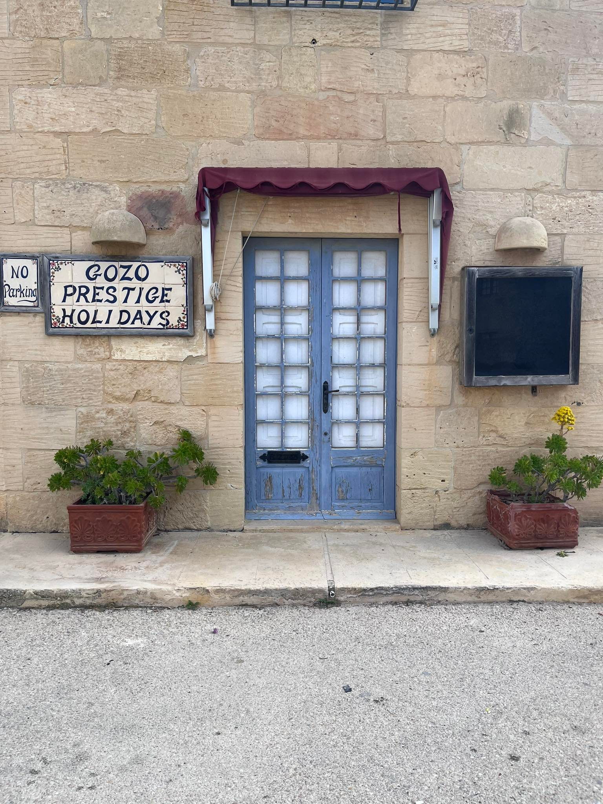
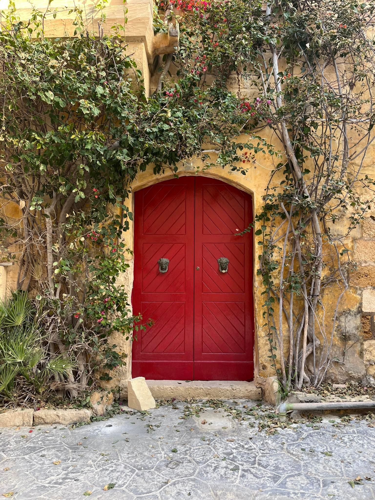
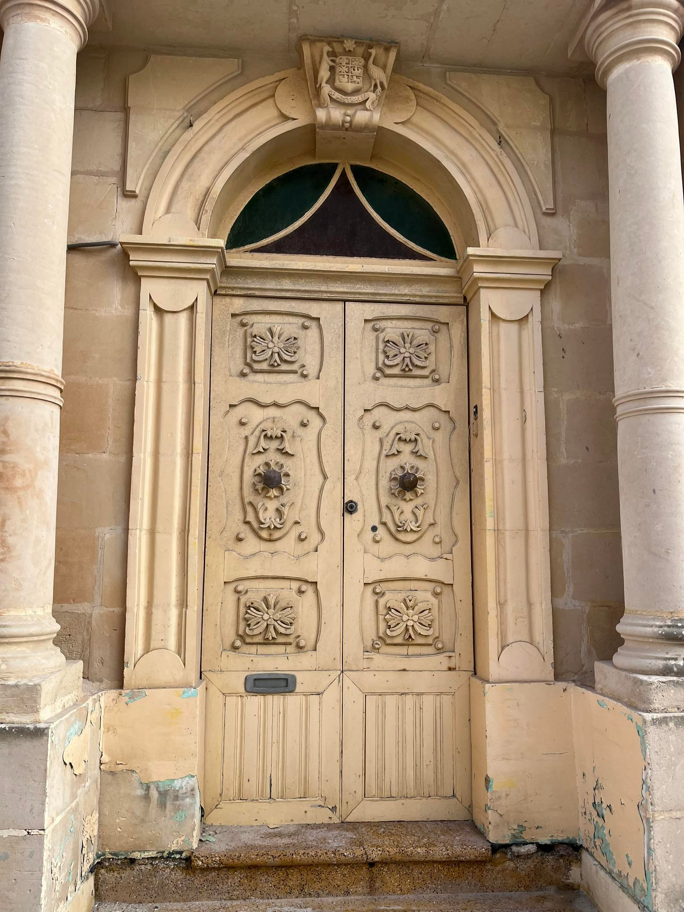
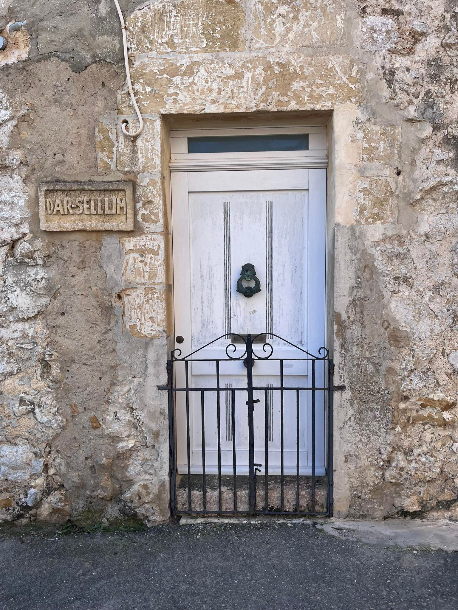

What is Adobe Illustrator?
"Computer graphics application software produced by Adobe int that allows users to create refined drawings, design, and layouts."
- Adobe Team
My experience with the software
I had never made use of the software before, so undoubtedly it was quite challenging at first. But as I experimented with the different features and researched further about how to properly use them, I finally got the hang of it.
THE ASSIGNMENT
Visual Research
For this assignment, I wanted to pay homage to my home island; Gozo. We had to go around the island and shoot photos of doors that struck us.
Here below are some of the photos that I took









RESULTS
I ended up choosing the yellow door as I quite liked its colour and geometry.
First, I sketched up the outlines of the door using thin black lines on Procreate.
- you can check out their website by clicking Here
SKETCH

As can be seen, the lines were kept as clean and crisp as possible. This allowed the sketch to be used as an underlay used in Adobe Illustrator, therefore facilitating the process.
FINAL VECTOR

It took me a great amount of time to get the hang of what tools were most suitable to compose the final vector.
Overall, I'm very happy with the outcome, as even though it is a flat image, depth is still perceived through the use of color and opacity elements.